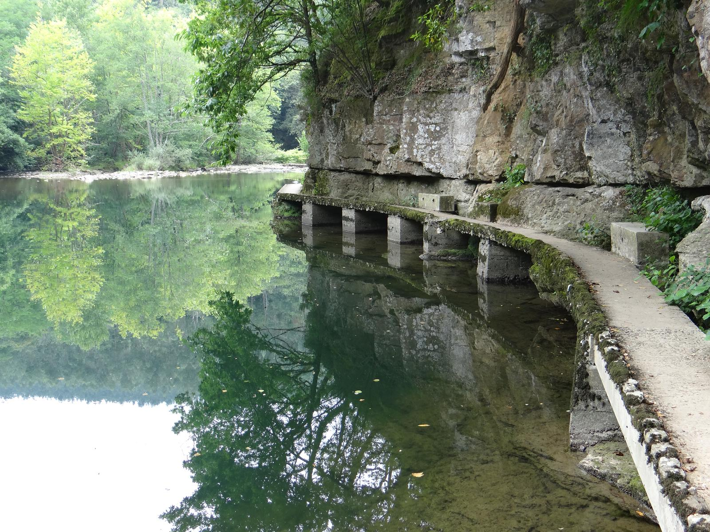
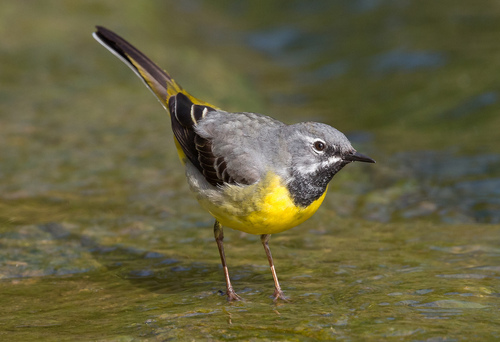
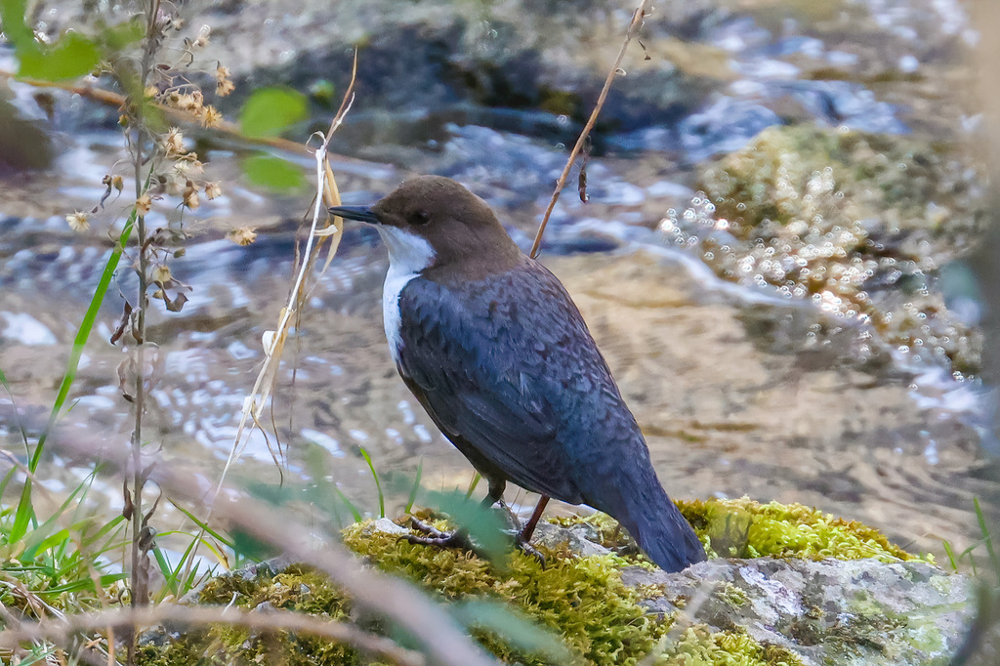
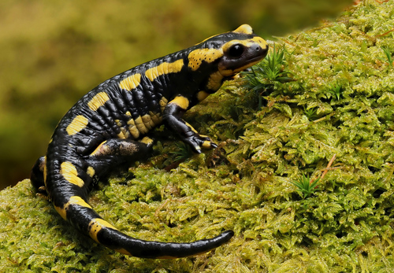
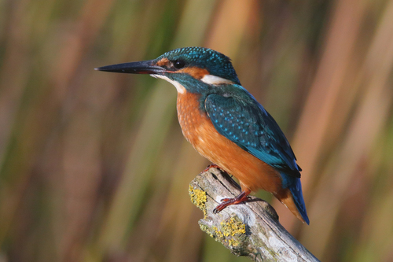
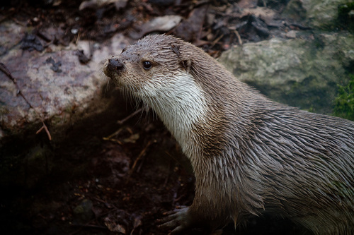

PUNTOS DEL RECORRIDO
Lugares que descubrirás durante la ruta
EL RECORRIDO
Dejaremos el coche en la estación de tren de Gibaja y desde ahí empezaremos la ruta dirigiéndonos hacía el barrio de Bárcena. Recorridos los primeros 100 metros llegaremos a un puente que no debemos cruzar, pero es aconsejable ir hasta la mitad para contemplar las bonitas vistas que nos ofrece del río Asón.
Al inicio del puente, en la parte izquierda, cogeremos las escaleras que bajan hacía el río y ahí empieza un sendero que discurre por la orilla del río y que no debemos abandonar hasta llegar a nuestro destino, el refugio nº 6.
Tengan precaución porque es un sendero estrecho que al final se convierte en una pasarela que va sobre el río, con el peligro que ello puede suponer. La vuelta se realizará por el mismo camino.
UN BOSQUE
ESENCIAL
Poco más de un kilómetro de sendero que discurre a lo largo del bosque de ribera del Asón, un lugar mágico donde alisedas y saucedas conforman un corredor ecológico de primer orden.
HELECHOS Y HERBÁCEAS
Además de las espectaculares alisedas y saucedas, acompañadas de laurel, avellano, olmos, plátanos, fresnos y chopos, durante todo el recorrido se pueden observar diferentes especies de helechos. Destaca una pequeña población de helecho real (Osmunda regalis), especie protegida de gran porte.
Acompañando a los helechos encontramos numerosas herbáceas: hierba de San Roberto, hierbabuena, hipérico y artemisa.

Entre las funciones ecológicas de estos bosques están regular el ciclo hidrológico, frenar la erosión y mantener el equilibrio del ecosistema fluvial, la biodiversidad y la conectividad. Constituyen corredores ecológicos de primer orden que ofrecen refugio y protección a los animales.
REFUGIO Y ALIMENTO

El bosque y el río proporcionan refugio y alimento a numerosas especies. En las orillas podremos encontrar garzas reales, lavanderas cascadeñas, ánades reales y martines pescadores. En el agua viven diferentes especies de peces y entre la vegetación encontraremos reptiles y anfibios.
El bosque también sirve de refugio para pequeños mamíferos como ratones de campo, ardillas y la emblemática nutria europea, además de una enorme diversidad de pequeños invertebrados.

Ave de riachuelos rápidos. Mueve la cola constantemente mientras camina por las orillas pedregosas.

Ave singular que camina bajo el agua para buscar invertebrados en el lecho del río.

Anfibio de llamativos colores negro y amarillo. Activa en noches húmedas. Completamente inofensiva.

Pequeño, veloz y de colores brillantes. Se lanza en picado sobre el agua para capturar peces.

Mamífero semiacuático y esquivo. Su presencia indica un ecosistema fluvial en excelente estado de conservación.
INFORMACIÓN ÚTIL
 Apta para niños
Apta para niños Calzada compartida
Calzada compartida Recurso hídrico
Recurso hídrico Restaurante
Restaurante¿LISTO PARA CAMINAR?
SEGUIR LA RUTA →